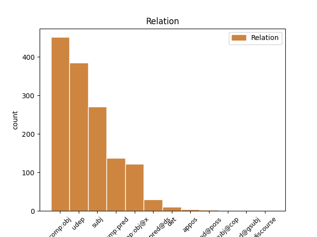

Distribution of features within this leaf

Agreement Rules sorted by frequency.
- When the dependent token is the direct object complements(comp:obj) of the head token, and the head token is VERB and the dependent token is PRON.
1 Talvisodassa _ _ _ _ 0 _ _ _
2 Kottilaa _ _ _ _ 0 _ _ _
3 ei _ _ _ _ 0 _ _ _
4 vallattu _ _ _ _ 0 _ _ _
5 , _ _ _ _ 0 _ _ _
6 mutta _ _ _ _ 0 _ _ _
7 vuoden _ _ _ _ 0 _ _ _
8 1940 _ _ _ _ 0 _ _ _
9 rauhansopimuksen _ _ _ _ 0 _ _ _
10 mukaan _ _ _ _ 0 _ _ _
11 se se PRON Pron Case=Nom|Number=Sing|PronType=Dem 14 comp:obj _ _
12 oli _ _ _ _ 0 _ _ _
13 kuitenkin _ _ _ _ 0 _ _ _
14 luovutettava luovuttaa VERB V Case=Nom|Degree=Pos|Number=Sing|PartForm=Pres|VerbForm=Part|Voice=Pass 0 _ _ _
15 ja _ _ _ _ 0 _ _ _
16 väestö _ _ _ _ 0 _ _ _
17 evakuoitiin _ _ _ _ 0 _ _ _
18 muualle _ _ _ _ 0 _ _ _
19 Suomeen _ _ _ _ 0 _ _ _
20 . _ _ _ _ 0 _ _ _
1 Elämäntapaliitto _ _ _ _ 0 _ _ _
2 on _ _ _ _ 0 _ _ _
3 osallistunut _ _ _ _ 0 _ _ _
4 yhteen _ _ _ _ 0 _ _ _
5 Antti _ _ _ _ 0 _ _ _
6 Lindtmanin _ _ _ _ 0 _ _ _
7 ( _ _ _ _ 0 _ _ _
8 sd _ _ _ _ 0 _ _ _
9 ) _ _ _ _ 0 _ _ _
10 seminaariin _ _ _ _ 0 _ _ _
11 ja _ _ _ _ 0 _ _ _
12 ostanut ostaa VERB V Case=Nom|Degree=Pos|Number=Sing|PartForm=Past|VerbForm=Part|Voice=Act 0 _ _ _
13 yhden _ _ _ _ 0 _ _ _
14 patsaan _ _ _ _ 0 _ _ _
15 Niko Niko PROPN N Case=Nom|Number=Sing 12 udep _ _
16 Kortteelta _ _ _ _ 0 _ _ _
17 ( _ _ _ _ 0 _ _ _
18 sd _ _ _ _ 0 _ _ _
19 ) _ _ _ _ 0 _ _ _
20 . _ _ _ _ 0 _ _ _
1 Tyttö _ _ _ _ 0 _ _ _
2 sai _ _ _ _ 0 _ _ _
3 erittäin _ _ _ _ 0 _ _ _
4 vakavia _ _ _ _ 0 _ _ _
5 palovammoja _ _ _ _ 0 _ _ _
6 , _ _ _ _ 0 _ _ _
7 ja _ _ _ _ 0 _ _ _
8 lääkärit _ _ _ _ 0 _ _ _
9 pelkäsivät _ _ _ _ 0 _ _ _
10 aluksi _ _ _ _ 0 _ _ _
11 hänen hän PRON Pron Case=Gen|Number=Sing|Person=3|PronType=Prs 12 subj _ _
12 kuolevan kuolla VERB V Case=Gen|Degree=Pos|Number=Sing|PartForm=Pres|VerbForm=Part|Voice=Act 0 _ _ _
13 . _ _ _ _ 0 _ _ _
1 Arabian Arabia PROPN N Case=Gen|Number=Sing 3 subj _ _
2 Business.com:n _ _ _ _ 0 _ _ _
3 saamien saada VERB V Case=Gen|Degree=Pos|Number=Plur|PartForm=Agt|VerbForm=Part|Voice=Act 0 _ _ _
4 epävirallisten _ _ _ _ 0 _ _ _
5 tietojen _ _ _ _ 0 _ _ _
6 mukaan _ _ _ _ 0 _ _ _
7 kyseessä _ _ _ _ 0 _ _ _
8 olisi _ _ _ _ 0 _ _ _
9 ollut _ _ _ _ 0 _ _ _
10 sähkövika _ _ _ _ 0 _ _ _
11 . _ _ _ _ 0 _ _ _
1 45-vuotias _ _ _ _ 0 _ _ _
2 Doran Doran PROPN N Case=Nom|Number=Sing 6 comp:obj _ _
3 oli _ _ _ _ 0 _ _ _
4 alun _ _ _ _ 0 _ _ _
5 perin _ _ _ _ 0 _ _ _
6 palkattu palkata VERB V Case=Nom|Degree=Pos|Number=Sing|PartForm=Past|VerbForm=Part|Voice=Pass 0 _ _ _
7 säätiöön _ _ _ _ 0 _ _ _
8 kirjanpitäjäksi _ _ _ _ 0 _ _ _
9 , _ _ _ _ 0 _ _ _
10 mutta _ _ _ _ 0 _ _ _
11 tammikuussa _ _ _ _ 0 _ _ _
12 2007 _ _ _ _ 0 _ _ _
13 hänet _ _ _ _ 0 _ _ _
14 ylennettiin _ _ _ _ 0 _ _ _
15 COO:ksi _ _ _ _ 0 _ _ _
16 ( _ _ _ _ 0 _ _ _
17 chief _ _ _ _ 0 _ _ _
18 operating _ _ _ _ 0 _ _ _
19 officer _ _ _ _ 0 _ _ _
20 ) _ _ _ _ 0 _ _ _
21 osan _ _ _ _ 0 _ _ _
22 entisen _ _ _ _ 0 _ _ _
23 toimitusjohtaja _ _ _ _ 0 _ _ _
24 ( _ _ _ _ 0 _ _ _
25 Executive _ _ _ _ 0 _ _ _
26 Officer _ _ _ _ 0 _ _ _
27 ) _ _ _ _ 0 _ _ _
28 Brad _ _ _ _ 0 _ _ _
29 Patricin _ _ _ _ 0 _ _ _
30 tehtävistä _ _ _ _ 0 _ _ _
31 siirryttyä _ _ _ _ 0 _ _ _
32 hänelle _ _ _ _ 0 _ _ _
33 . _ _ _ _ 0 _ _ _
1 Kolumbian _ _ _ _ 0 _ _ _
2 konservatiivipresidentti _ _ _ _ 0 _ _ _
3 Álvaro _ _ _ _ 0 _ _ _
4 Uribe _ _ _ _ 0 _ _ _
5 ja _ _ _ _ 0 _ _ _
6 Nicaraguan _ _ _ _ 0 _ _ _
7 vasemmistojohtaja _ _ _ _ 0 _ _ _
8 Daniel _ _ _ _ 0 _ _ _
9 Ortega _ _ _ _ 0 _ _ _
10 ovat _ _ _ _ 0 _ _ _
11 kumpikin kumpikin PRON Pron Case=Nom|Number=Sing|PronType=Ind 13 udep _ _
12 tahoillaan _ _ _ _ 0 _ _ _
13 yrittäneet yrittää VERB V Case=Nom|Degree=Pos|Number=Plur|PartForm=Past|VerbForm=Part|Voice=Act 0 _ _ _
14 poistaa _ _ _ _ 0 _ _ _
15 esteitä _ _ _ _ 0 _ _ _
16 uudelleen _ _ _ _ 0 _ _ _
17 ehdolle _ _ _ _ 0 _ _ _
18 asettumisen _ _ _ _ 0 _ _ _
19 tieltä _ _ _ _ 0 _ _ _
20 . _ _ _ _ 0 _ _ _
1 Komissio _ _ _ _ 0 _ _ _
2 korostaa _ _ _ _ 0 _ _ _
3 tiedonannostaan _ _ _ _ 0 _ _ _
4 ” _ _ _ _ 0 _ _ _
5 Syrjinnän _ _ _ _ 0 _ _ _
6 torjuminen _ _ _ _ 0 _ _ _
7 ja _ _ _ _ 0 _ _ _
8 yhdenvertaiset _ _ _ _ 0 _ _ _
9 mahdollisuudet _ _ _ _ 0 _ _ _
10 kaikille _ _ _ _ 0 _ _ _
11 – _ _ _ _ 0 _ _ _
12 puitestrategia _ _ _ _ 0 _ _ _
13 ” _ _ _ _ 0 _ _ _
14 tarvetta _ _ _ _ 0 _ _ _
15 tehostaa _ _ _ _ 0 _ _ _
16 pyrkimyksiä _ _ _ _ 0 _ _ _
17 , _ _ _ _ 0 _ _ _
18 joilla _ _ _ _ 0 _ _ _
19 edistetään _ _ _ _ 0 _ _ _
20 miesten _ _ _ _ 0 _ _ _
21 ja _ _ _ _ 0 _ _ _
22 naisten _ _ _ _ 0 _ _ _
23 yhtäläisiä _ _ _ _ 0 _ _ _
24 mahdollisuuksia _ _ _ _ 0 _ _ _
25 , _ _ _ _ 0 _ _ _
26 jotta _ _ _ _ 0 _ _ _
27 voidaan _ _ _ _ 0 _ _ _
28 poistaa _ _ _ _ 0 _ _ _
29 maahanmuuttajien _ _ _ _ 0 _ _ _
30 , _ _ _ _ 0 _ _ _
31 etnisten _ _ _ _ 0 _ _ _
32 vähemmistöjen _ _ _ _ 0 _ _ _
33 ja _ _ _ _ 0 _ _ _
34 muiden muu PRON Pron Case=Gen|Number=Plur|PronType=Ind 37 det _ _
35 heikommassa _ _ _ _ 0 _ _ _
36 asemassa _ _ _ _ 0 _ _ _
37 olevien olla VERB V Case=Gen|Degree=Pos|Number=Plur|PartForm=Pres|VerbForm=Part|Voice=Act 0 _ _ _
38 kohtaamat _ _ _ _ 0 _ _ _
39 rakenteelliset _ _ _ _ 0 _ _ _
40 esteet _ _ _ _ 0 _ _ _
41 . _ _ _ _ 0 _ _ _
1 Mel _ _ _ _ 0 _ _ _
2 Funn _ _ _ _ 0 _ _ _
3 ( _ _ _ _ 0 _ _ _
4 Brooks _ _ _ _ 0 _ _ _
5 ) _ _ _ _ 0 _ _ _
6 -niminen _ _ _ _ 0 _ _ _
7 ohjaaja _ _ _ _ 0 _ _ _
8 ilmoittaa _ _ _ _ 0 _ _ _
9 Studiopomolle _ _ _ _ 0 _ _ _
10 valmistavansa _ _ _ _ 0 _ _ _
11 mykkäelokuvan _ _ _ _ 0 _ _ _
12 , _ _ _ _ 0 _ _ _
13 mutta _ _ _ _ 0 _ _ _
14 saadakseen saada VERB V Case=Tra|InfForm=1|Number=Sing|Person[psor]=3|VerbForm=Inf|Voice=Act 0 _ _ _
15 mykkäelokuvan _ _ _ _ 0 _ _ _
16 suosituksi suosittu ADJ A Case=Tra|Degree=Pos|Number=Sing 14 udep _ SpaceAfter=No
17 , _ _ _ _ 0 _ _ _
18 hänen _ _ _ _ 0 _ _ _
19 täytyy _ _ _ _ 0 _ _ _
20 hankkia _ _ _ _ 0 _ _ _
21 siihen _ _ _ _ 0 _ _ _
22 kuuluisia _ _ _ _ 0 _ _ _
23 näyttelijöitä _ _ _ _ 0 _ _ _
24 . _ _ _ _ 0 _ _ _
1 Illan _ _ _ _ 0 _ _ _
2 pimennyttyä _ _ _ _ 0 _ _ _
3 alkoi _ _ _ _ 0 _ _ _
4 hieman _ _ _ _ 0 _ _ _
5 sadella _ _ _ _ 0 _ _ _
6 ja _ _ _ _ 0 _ _ _
7 kun _ _ _ _ 0 _ _ _
8 kengätkin _ _ _ _ 0 _ _ _
9 olivat _ _ _ _ 0 _ _ _
10 aivan _ _ _ _ 0 _ _ _
11 litimärät _ _ _ _ 0 _ _ _
12 ja _ _ _ _ 0 _ _ _
13 olo _ _ _ _ 0 _ _ _
14 kohmeinen _ _ _ _ 0 _ _ _
15 , _ _ _ _ 0 _ _ _
16 oli _ _ _ _ 0 _ _ _
17 helpotus _ _ _ _ 0 _ _ _
18 päästä _ _ _ _ 0 _ _ _
19 lähtemään lähteä VERB V Case=Ill|InfForm=3|Number=Sing|VerbForm=Inf|Voice=Act 0 _ _ _
20 Tampereen _ _ _ _ 0 _ _ _
21 keskustaan _ _ _ _ 0 _ _ _
22 syömään syödä VERB V Case=Ill|InfForm=3|Number=Sing|VerbForm=Inf|Voice=Act 19 comp:obj@x _ _
23 ja _ _ _ _ 0 _ _ _
24 saunomaan _ _ _ _ 0 _ _ _
25 . _ _ _ _ 0 _ _ _
1 Vaatimuksena _ _ _ _ 0 _ _ _
2 on _ _ _ _ 0 _ _ _
3 vähintään _ _ _ _ 0 _ _ _
4 kaksi _ _ _ _ 0 _ _ _
5 vuotta _ _ _ _ 0 _ _ _
6 päätoimista _ _ _ _ 0 _ _ _
7 isännöintiä _ _ _ _ 0 _ _ _
8 tai _ _ _ _ 0 _ _ _
9 viisi _ _ _ _ 0 _ _ _
10 vuotta _ _ _ _ 0 _ _ _
11 päätoimista pää#toiminen ADJ A Case=Par|Degree=Pos|Derivation=Inen|Number=Sing 12 comp:obj _ _
12 vastaavaa vastata VERB V Case=Par|Degree=Pos|Number=Sing|PartForm=Pres|VerbForm=Part|Voice=Act 0 _ _ _
13 kokemusta _ _ _ _ 0 _ _ _
14 kiinteistöalalta _ _ _ _ 0 _ _ _
15 . _ _ _ _ 0 _ _ _
1 Isossa-Britanniassa _ _ _ _ 0 _ _ _
2 viranomaiset _ _ _ _ 0 _ _ _
3 ovat _ _ _ _ 0 _ _ _
4 ottaneet _ _ _ _ 0 _ _ _
5 haltuunsa _ _ _ _ 0 _ _ _
6 islantilaisen _ _ _ _ 0 _ _ _
7 Kaupthingin _ _ _ _ 0 _ _ _
8 tytäryhtiön _ _ _ _ 0 _ _ _
9 Singer _ _ _ _ 0 _ _ _
10 & _ _ _ _ 0 _ _ _
11 Friedlanderin _ _ _ _ 0 _ _ _
12 , _ _ _ _ 0 _ _ _
13 sillä _ _ _ _ 0 _ _ _
14 sen _ _ _ _ 0 _ _ _
15 ei _ _ _ _ 0 _ _ _
16 katsottu _ _ _ _ 0 _ _ _
17 kykenevän kyetä VERB V Case=Gen|Degree=Pos|Number=Sing|PartForm=Pres|VerbForm=Part|Voice=Act 0 _ _ _
18 selviävän selvitä VERB V Case=Gen|Degree=Pos|Number=Sing|PartForm=Pres|VerbForm=Part|Voice=Act 17 comp:pred _ _
19 ongelmistaan _ _ _ _ 0 _ _ _
20 itse _ _ _ _ 0 _ _ _
21 . _ _ _ _ 0 _ _ _
1 Hallittuja _ _ _ _ 0 _ _ _
2 jokia _ _ _ _ 0 _ _ _
3 ja _ _ _ _ 0 _ _ _
4 kastelukanavia _ _ _ _ 0 _ _ _
5 rakentaen _ _ _ _ 0 _ _ _
6 ihmiset _ _ _ _ 0 _ _ _
7 kykenevät _ _ _ _ 0 _ _ _
8 jokseenkin _ _ _ _ 0 _ _ _
9 hallitsemaan hallita VERB V Case=Ill|InfForm=3|Number=Sing|VerbForm=Inf|Voice=Act 0 _ _ _
10 kaaosta _ _ _ _ 0 _ _ _
11 , _ _ _ _ 0 _ _ _
12 tekemään tehdä VERB V Case=Ill|InfForm=3|Number=Sing|VerbForm=Inf|Voice=Act 9 appos _ _
13 siitä _ _ _ _ 0 _ _ _
14 mielekkään _ _ _ _ 0 _ _ _
15 — _ _ _ _ 0 _ _ _
16 vaikka _ _ _ _ 0 _ _ _
17 yhä _ _ _ _ 0 _ _ _
18 vaarallisen _ _ _ _ 0 _ _ _
19 — _ _ _ _ 0 _ _ _
20 osan _ _ _ _ 0 _ _ _
21 kosmoksen _ _ _ _ 0 _ _ _
22 rakennetta _ _ _ _ 0 _ _ _
23 . _ _ _ _ 0 _ _ _
1 - _ _ _ _ 0 _ _ _
2 Ihmiset _ _ _ _ 0 _ _ _
3 ovat _ _ _ _ 0 _ _ _
4 kertoneet kertoa VERB V Case=Nom|Degree=Pos|Number=Plur|PartForm=Past|VerbForm=Part|Voice=Act 0 _ _ _
5 kohdanneensa kohdata VERB V Case=Nom|Degree=Pos|Number=Sing|PartForm=Past|Person[psor]=3|VerbForm=Part|Voice=Act 4 comp:obj _ _
6 muun _ _ _ _ 0 _ _ _
7 muassa _ _ _ _ 0 _ _ _
8 enkeleitä _ _ _ _ 0 _ _ _
9 , _ _ _ _ 0 _ _ _
10 perheenjäsenen _ _ _ _ 0 _ _ _
11 kummituksen _ _ _ _ 0 _ _ _
12 , _ _ _ _ 0 _ _ _
13 tunnistamattoman _ _ _ _ 0 _ _ _
14 ihmisen _ _ _ _ 0 _ _ _
15 muotoisen _ _ _ _ 0 _ _ _
16 hahmon _ _ _ _ 0 _ _ _
17 , _ _ _ _ 0 _ _ _
18 paholaisen _ _ _ _ 0 _ _ _
19 , _ _ _ _ 0 _ _ _
20 jeesuksen _ _ _ _ 0 _ _ _
21 , _ _ _ _ 0 _ _ _
22 jumalan _ _ _ _ 0 _ _ _
23 tai _ _ _ _ 0 _ _ _
24 eläimen _ _ _ _ 0 _ _ _
25 , _ _ _ _ 0 _ _ _
26 kertoi _ _ _ _ 0 _ _ _
27 Kirsi _ _ _ _ 0 _ _ _
28 Hänninen _ _ _ _ 0 _ _ _
29 vierailuluennolla _ _ _ _ 0 _ _ _
30 nykysuomalaisten _ _ _ _ 0 _ _ _
31 yliluonnollisista _ _ _ _ 0 _ _ _
32 kokemuksista _ _ _ _ 0 _ _ _
33 . _ _ _ _ 0 _ _ _
1 Tämän _ _ _ _ 0 _ _ _
2 vuoksi _ _ _ _ 0 _ _ _
3 kaikki _ _ _ _ 0 _ _ _
4 Etiopian _ _ _ _ 0 _ _ _
5 prosessia _ _ _ _ 0 _ _ _
6 koskevat _ _ _ _ 0 _ _ _
7 mielenilmaisut _ _ _ _ 0 _ _ _
8 voidaan _ _ _ _ 0 _ _ _
9 käsittää _ _ _ _ 0 _ _ _
10 väärin _ _ _ _ 0 _ _ _
11 , _ _ _ _ 0 _ _ _
12 kuinka _ _ _ _ 0 _ _ _
13 rakentavia _ _ _ _ 0 _ _ _
14 ja _ _ _ _ 0 _ _ _
15 hyvää hyvä ADJ A Case=Par|Degree=Pos|Number=Sing 16 comp:pred _ _
16 tarkoittavia tarkoittaa VERB V Case=Par|Degree=Pos|Number=Plur|PartForm=Pres|VerbForm=Part|Voice=Act 0 _ _ _
17 ne _ _ _ _ 0 _ _ _
18 sitten _ _ _ _ 0 _ _ _
19 ovatkaan _ _ _ _ 0 _ _ _
20 , _ _ _ _ 0 _ _ _
21 niin _ _ _ _ 0 _ _ _
22 kuin _ _ _ _ 0 _ _ _
23 tämä _ _ _ _ 0 _ _ _
24 parlamentin _ _ _ _ 0 _ _ _
25 aloite _ _ _ _ 0 _ _ _
26 tietenkin _ _ _ _ 0 _ _ _
27 on _ _ _ _ 0 _ _ _
28 , _ _ _ _ 0 _ _ _
29 tai _ _ _ _ 0 _ _ _
30 ne _ _ _ _ 0 _ _ _
31 , _ _ _ _ 0 _ _ _
32 jotka _ _ _ _ 0 _ _ _
33 pyrkivät _ _ _ _ 0 _ _ _
34 keskeyttämään _ _ _ _ 0 _ _ _
35 Etiopian _ _ _ _ 0 _ _ _
36 demokratisoitumisprosessin _ _ _ _ 0 _ _ _
37 , _ _ _ _ 0 _ _ _
38 voivat _ _ _ _ 0 _ _ _
39 käyttää _ _ _ _ 0 _ _ _
40 niitä _ _ _ _ 0 _ _ _
41 noiden _ _ _ _ 0 _ _ _
42 katalien _ _ _ _ 0 _ _ _
43 tarkoitusperiensä _ _ _ _ 0 _ _ _
44 edistämiseen _ _ _ _ 0 _ _ _
45 . _ _ _ _ 0 _ _ _
1 Enkä _ _ _ _ 0 _ _ _
2 voi _ _ _ _ 0 _ _ _
3 olla _ _ _ _ 0 _ _ _
4 olematta _ _ _ _ 0 _ _ _
5 onnellinen _ _ _ _ 0 _ _ _
6 , _ _ _ _ 0 _ _ _
7 kun _ _ _ _ 0 _ _ _
8 tiedän _ _ _ _ 0 _ _ _
9 muidenkin _ _ _ _ 0 _ _ _
10 surevien surra VERB V Case=Gen|Degree=Pos|Number=Plur|PartForm=Pres|VerbForm=Part|Voice=Act 12 subj _ _
11 joskus _ _ _ _ 0 _ _ _
12 hymyilevän hymyillä VERB V Case=Gen|Degree=Pos|Number=Sing|PartForm=Pres|VerbForm=Part|Voice=Act 0 _ _ _
13 ensimmäistä _ _ _ _ 0 _ _ _
14 kertaa _ _ _ _ 0 _ _ _
15 tai _ _ _ _ 0 _ _ _
16 tuntevansa _ _ _ _ 0 _ _ _
17 sen _ _ _ _ 0 _ _ _
18 hyvän _ _ _ _ 0 _ _ _
19 tunteen _ _ _ _ 0 _ _ _
20 , _ _ _ _ 0 _ _ _
21 kun _ _ _ _ 0 _ _ _
22 pitkän _ _ _ _ 0 _ _ _
23 itkemisen _ _ _ _ 0 _ _ _
24 jälkeen _ _ _ _ 0 _ _ _
25 ensimmäisen _ _ _ _ 0 _ _ _
26 kerran _ _ _ _ 0 _ _ _
27 naurahtaa _ _ _ _ 0 _ _ _
28 . _ _ _ _ 0 _ _ _
1 Vanhaa _ _ _ _ 0 _ _ _
2 tietä _ _ _ _ 0 _ _ _
3 on _ _ _ _ 0 _ _ _
4 käyttänyt _ _ _ _ 0 _ _ _
5 päivittäin _ _ _ _ 0 _ _ _
6 noin _ _ _ _ 0 _ _ _
7 9 000 _ _ _ _ 0 _ _ _
8 autoilijaa _ _ _ _ 0 _ _ _
9 , _ _ _ _ 0 _ _ _
10 joista _ _ _ _ 0 _ _ _
11 nyt _ _ _ _ 0 _ _ _
12 6 000: 6000 NUM Num Case=Gen|Number=Sing|NumType=Card 15 subj _ _
13 n _ _ _ _ 0 _ _ _
14 arvellaan _ _ _ _ 0 _ _ _
15 siirtyvän siirtyä VERB V Case=Gen|Degree=Pos|Number=Sing|PartForm=Pres|VerbForm=Part|Voice=Act 0 _ _ _
16 uuden _ _ _ _ 0 _ _ _
17 ohitustien _ _ _ _ 0 _ _ _
18 käyttäjiksi _ _ _ _ 0 _ _ _
19 . _ _ _ _ 0 _ _ _
1 ( _ _ _ _ 0 _ _ _
2 14 _ _ _ _ 0 _ _ _
3 ) _ _ _ _ 0 _ _ _
4 Onnettomuuksien _ _ _ _ 0 _ _ _
5 uhrien _ _ _ _ 0 _ _ _
6 ja _ _ _ _ 0 _ _ _
7 heidän hän PRON Pron Case=Gen|Number=Plur|Person=3|PronType=Prs 8 mod@poss _ _
8 huollettaviensa huoltaa VERB V Case=Gen|Degree=Pos|Number=Plur|PartForm=Pres|Person[psor]=3|VerbForm=Part|Voice=Pass 0 _ _ _
9 lyhyen _ _ _ _ 0 _ _ _
10 aikavälin _ _ _ _ 0 _ _ _
11 taloudellista _ _ _ _ 0 _ _ _
12 tilannetta _ _ _ _ 0 _ _ _
13 on _ _ _ _ 0 _ _ _
14 toivottavaa _ _ _ _ 0 _ _ _
15 helpottaa _ _ _ _ 0 _ _ _
16 välittömästi _ _ _ _ 0 _ _ _
17 onnettomuuden _ _ _ _ 0 _ _ _
18 jälkeen _ _ _ _ 0 _ _ _
19 . _ _ _ _ 0 _ _ _
1 Turun _ _ _ _ 0 _ _ _
2 ammattikorkeakoulun _ _ _ _ 0 _ _ _
3 jatko-opiskelija _ _ _ _ 0 _ _ _
4 Markus _ _ _ _ 0 _ _ _
5 Åfelt _ _ _ _ 0 _ _ _
6 kertoi _ _ _ _ 0 _ _ _
7 projektiryhmän _ _ _ _ 0 _ _ _
8 toivovan toivoa VERB V Case=Gen|Degree=Pos|Number=Sing|PartForm=Pres|VerbForm=Part|Voice=Act 0 _ _ _
9 myös _ _ _ _ 0 _ _ _
10 lähialueen _ _ _ _ 0 _ _ _
11 mainostajien _ _ _ _ 0 _ _ _
12 lähtevän lähteä VERB V Case=Gen|Degree=Pos|Number=Sing|PartForm=Pres|VerbForm=Part|Voice=Act 8 comp:pred@ds _ _
13 mukaan _ _ _ _ 0 _ _ _
14 yhteistyöhön _ _ _ _ 0 _ _ _
15 . _ _ _ _ 0 _ _ _
1 Raiskaajista _ _ _ _ 0 _ _ _
2 yksi yksi NUM Num Case=Nom|Number=Sing|NumType=Card 10 comp:obj _ SpaceAfter=No
3 , _ _ _ _ 0 _ _ _
4 17-vuotias _ _ _ _ 0 _ _ _
5 Tottenhamissa _ _ _ _ 0 _ _ _
6 asuva _ _ _ _ 0 _ _ _
7 poika _ _ _ _ 0 _ _ _
8 , _ _ _ _ 0 _ _ _
9 on _ _ _ _ 0 _ _ _
10 pidätetty pidättää VERB V Case=Nom|Degree=Pos|Number=Sing|PartForm=Past|VerbForm=Part|Voice=Pass 0 _ _ _
11 . _ _ _ _ 0 _ _ _
1 CERN _ _ _ _ 0 _ _ _
2 on _ _ _ _ 0 _ _ _
3 Rösslerin Rössler PROPN N Case=Gen|Number=Sing 4 mod@gsubj _ _
4 kertoman kertoa VERB V Case=Gen|Degree=Pos|Number=Sing|PartForm=Agt|VerbForm=Part|Voice=Act 0 _ _ _
5 mukaan _ _ _ _ 0 _ _ _
6 myöntänyt _ _ _ _ 0 _ _ _
7 LHC:n _ _ _ _ 0 _ _ _
8 käynnistämisessä _ _ _ _ 0 _ _ _
9 syntyvän _ _ _ _ 0 _ _ _
10 mustia _ _ _ _ 0 _ _ _
11 aukkoja _ _ _ _ 0 _ _ _
12 . _ _ _ _ 0 _ _ _
Disagree Examples:
1 Onneksi _ _ _ _ 0 _ _ _
2 sitä se PRON Pron Case=Par|Number=Sing|PronType=Dem 6 comp:obj _ _
3 ei _ _ _ _ 0 _ _ _
4 missään _ _ _ _ 0 _ _ _
5 vaiheessa _ _ _ _ 0 _ _ _
6 restauroitu restauroida VERB V Case=Nom|Degree=Pos|Number=Sing|PartForm=Past|VerbForm=Part|Voice=Pass 0 _ _ _
7 samalla _ _ _ _ 0 _ _ _
8 tavoin _ _ _ _ 0 _ _ _
9 kuin _ _ _ _ 0 _ _ _
10 Uppsalan _ _ _ _ 0 _ _ _
11 tuomiokirkkoa _ _ _ _ 0 _ _ _
12 . _ _ _ _ 0 _ _ _
1 Kuusikymmentäluvun _ _ _ _ 0 _ _ _
2 suomalainen _ _ _ _ 0 _ _ _
3 iskelmä _ _ _ _ 0 _ _ _
4 oli _ _ _ _ 0 _ _ _
5 hyvin _ _ _ _ 0 _ _ _
6 valjastettu valjastaa VERB V Case=Nom|Degree=Pos|Number=Sing|PartForm=Past|VerbForm=Part|Voice=Pass 0 _ _ _
7 kuvittamaan kuvittaa VERB V Case=Ill|InfForm=3|Number=Sing|VerbForm=Inf|Voice=Act 6 comp:obj@x _ _
8 tämän _ _ _ _ 0 _ _ _
9 päivän _ _ _ _ 0 _ _ _
10 suomalaisen _ _ _ _ 0 _ _ _
11 pornokaupan _ _ _ _ 0 _ _ _
12 maailmaa _ _ _ _ 0 _ _ _
13 . _ _ _ _ 0 _ _ _
1 Samalla _ _ _ _ 0 _ _ _
2 kun _ _ _ _ 0 _ _ _
3 pornokaupan _ _ _ _ 0 _ _ _
4 omistaja _ _ _ _ 0 _ _ _
5 kertoo _ _ _ _ 0 _ _ _
6 olevan _ _ _ _ 0 _ _ _
7 ajan _ _ _ _ 0 _ _ _
8 esitellä _ _ _ _ 0 _ _ _
9 uusi _ _ _ _ 0 _ _ _
10 sirkusprinsessa _ _ _ _ 0 _ _ _
11 , _ _ _ _ 0 _ _ _
12 intimihierojat _ _ _ _ 0 _ _ _
13 joutuvat _ _ _ _ 0 _ _ _
14 kauppaamaan kaupata VERB V Case=Ill|InfForm=3|Number=Sing|VerbForm=Inf|Voice=Act 0 _ _ _
15 itseään itse PRON Pron Case=Par|Number=Sing|Person[psor]=3|Reflex=Yes 14 comp:obj _ _
16 keski-ikäisille _ _ _ _ 0 _ _ _
17 lihaville _ _ _ _ 0 _ _ _
18 miehille _ _ _ _ 0 _ _ _
19 . _ _ _ _ 0 _ _ _
1 Lauluista _ _ _ _ 0 _ _ _
2 ainoa _ _ _ _ 0 _ _ _
3 kritisoitava _ _ _ _ 0 _ _ _
4 on _ _ _ _ 0 _ _ _
5 mielestäni _ _ _ _ 0 _ _ _
6 vain _ _ _ _ 0 _ _ _
7 loppukappaleen _ _ _ _ 0 _ _ _
8 valinta _ _ _ _ 0 _ _ _
9 , _ _ _ _ 0 _ _ _
10 mitä mikä PRON Pron Case=Par|Number=Sing|PronType=Rel 12 comp:obj _ _
11 ei _ _ _ _ 0 _ _ _
12 pelastanaut pelastaa VERB V Case=Nom|Degree=Pos|Number=Sing|PartForm=Past|Typo=Yes|VerbForm=Part|Voice=Act 0 _ _ _
13 sinänsä _ _ _ _ 0 _ _ _
14 kaunis _ _ _ _ 0 _ _ _
15 taustaprojisointikaan _ _ _ _ 0 _ _ _
16 . _ _ _ _ 0 _ _ _
1 Molemmat _ _ _ _ 0 _ _ _
2 olivat _ _ _ _ 0 _ _ _
3 kovin _ _ _ _ 0 _ _ _
4 kiinnostuneita _ _ _ _ 0 _ _ _
5 ja _ _ _ _ 0 _ _ _
6 he _ _ _ _ 0 _ _ _
7 olivatkin _ _ _ _ 0 _ _ _
8 heti _ _ _ _ 0 _ _ _
9 ottaneet _ _ _ _ 0 _ _ _
10 yhteyttä _ _ _ _ 0 _ _ _
11 tutkimusvastaavaan _ _ _ _ 0 _ _ _
12 , _ _ _ _ 0 _ _ _
13 joka _ _ _ _ 0 _ _ _
14 oli _ _ _ _ 0 _ _ _
15 sanonut sanoa VERB V Case=Nom|Degree=Pos|Number=Sing|PartForm=Past|VerbForm=Part|Voice=Act 0 _ _ _
16 isäni _ _ _ _ 0 _ _ _
17 täyttävän täyttää VERB V Case=Gen|Degree=Pos|Number=Sing|PartForm=Pres|VerbForm=Part|Voice=Act 15 comp:pred@ds _ _
18 kaikki _ _ _ _ 0 _ _ _
19 kriteerit _ _ _ _ 0 _ _ _
20 . _ _ _ _ 0 _ _ _